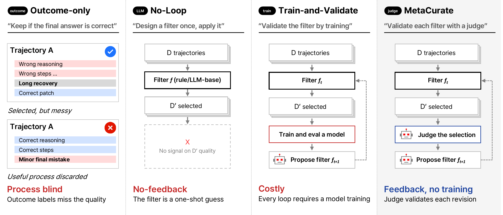
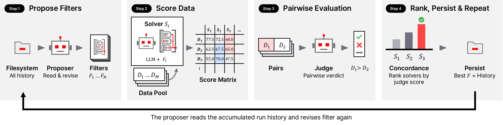

Preprint · 2026
MetaCurate:
Evolving Curation Filters for High-Quality Agentic Coding Data
Donghoon Kim1*, Seunghyuk Oh1*, Kevin Galim1, Minseo Kim2, Minjae Lee1, Younghyun Kim1, Wooseok Seo1,
Hyung Il Koo1, Wonjun Kang1
1FuriosaAI 2University of California, Berkeley *Equal contribution

Four ways to select agent trajectories for SFT: (a) outcome-only filtering, (b) a filter designed once with no loop, (c) a loop that validates each filter by training, and (d) MetaCurate, a loop that validates each filter with an LLM judge, without training a model.
SWE-bench Verified, DSv4Pro pool
SWE-bench Verified, Nemotron v3 pool
cheaper search than a training-loop baseline
models trained during filter search
Abstract
Supervised fine-tuning (SFT) on agent trajectories is an effective way to improve coding agents, but selecting useful training examples requires more than identifying successful runs. A resolved patch may follow inefficient reasoning or unnecessary tool use, while a failed run may still contain useful intermediate steps. Training pipelines therefore rely on rules and qualitative assessments to filter trajectories, yet designing these filters typically requires substantial human expertise, and validating improvements through repeated training and evaluation is expensive.
We introduce MetaCurate, a training-free framework that evolves executable trajectory curation filters using pairwise LLM judgments. Disagreements between the filter’s rankings and the judge’s preferences provide targeted feedback for jointly revising its rules, rubric, and aggregation policy. The resulting filter scores trajectories independently, so pairwise comparisons are required only during search. Starting from a blank filter, MetaCurate autonomously discovers a curation strategy that achieves competitive downstream performance without task-specific handwritten criteria.
We validate downstream utility through controlled SFT experiments on our uncurated trajectory pool and the Nemotron v3 SWE dataset, with random selection and hand-authored filtering as baselines. In our experiments, MetaCurate achieves the highest mean SWE-bench Verified score among the compared methods, including hand-authored rule-based filtering and a training-loop baseline whose search costs 3.5× as much.
Method
MetaCurate uses pairwise judge preferences as supervision, transferring comparison feedback into a reusable pointwise filter. Once fixed, the filter scores the full pool without further pairwise judgments.

Propose filters
The proposer revises the current filter from misranked pairs and judge rationales, probing each draft on exploration trajectories.
Score data
The solver scores each sampled trajectory with every candidate filter.
Pairwise evaluation
The judge compares trajectory pairs in both orders and keeps only order-consistent preferences.
Rank & persist
A candidate is promoted only if it improves agreement with the judge on fixed selection pairs by more than expected scoring noise.
Concordance
We evaluate each candidate filter by comparing its trajectory rankings with the judge’s pairwise preferences for SFT usefulness.
CF(P) = 1⁄|P| Σ(x≻y)∈P κF(x, y)
Each filter F scores a trajectory x individually, producing sF(x). For a judged pair (x ≻ y) in a preference set P, κF(x, y) equals 1 if sF(x) > sF(y), ½ for a tie, and 0 otherwise.
Results
Qwen 3.5 9B fine-tuned on 1,000 selected trajectories.
SWE-bench Verified resolved rate (%), mean ± SD over three evaluations of each checkpoint.
| Method | Hand-authored or oracle information | DSv4Pro | Nemotron v3 |
|---|---|---|---|
| Base model | — | 53.9 ± 2.0 | 53.9 ± 2.0 |
| Full pool (volume anchor) | N/A | 63.1 ± 1.2 | 54.0 ± 1.6 |
| Random | N/A | 61.7 ± 1.6 | 52.9 ± 1.3 |
| Resolved | Execution labels | 61.9 ± 0.7 | 54.4 ± 0.2 |
| Gold-patch recall | Reference patches | 61.7 ± 2.4 | 53.9 ± 0.5 |
| Rule filter | 7 signals, 6 thresholds | 63.1 ± 1.4 | 54.4 ± 0.5 |
| LLM filter | 1 prompt | 62.9 ± 1.2 | 54.8 ± 2.2 |
| CurateEvo | N/A | 62.7 ± 1.5 | 53.6 ± 0.6 |
| MetaCurate, handwritten seed | Handwritten 6 criteria | 63.3 ± 0.6 | 54.7 ± 0.4 |
| MetaCurate (ours) | N/A | 64.0 ± 0.7 | 56.5 ± 1.7 |
Training-free curation achieves the highest mean downstream scores. MetaCurate thus obtains the highest observed means among the compared methods on both pools without model training during filter search.
Transfers to 27B
The same subsets train Qwen 3.5 27B to 74.3%, against 73.3% for Resolved, 73.1% for Rule filter and 72.7% for Random, with no new search.
Handwritten vs. blank seed
A blank seed achieves concordance comparable to a handwritten filter, without task-specific handwritten initialization.
Concordance tracks utility
Across iterations 3, 6, 9 and final, selection concordance rises 0.845 → 0.912 and held-out test concordance 0.830 → 0.896, while SWE-bench Verified rises overall from 62.4% to 64.0%.
Cheaper feedback
$191 to evaluate 45 candidates by pairwise judgment, against $659 for 3 candidates evaluated by training (CurateEvo).
Dataset
We generate and release a corpus of 4,286 coding-agent trajectories with DeepSeek V4 Pro from 1,415 instance IDs, designed to support experiments with a range of curation strategies.
Dataset card
DSv4Pro dataset
An uncurated pool of coding-agent trajectories for SFT. We aimed to collect three attempts per source instance.
- Trajectories
- 4,286
- Instance IDs
- 1,415
- Generator
- DeepSeek V4 Pro + mini-swe-agent, temperature 0.7
- Task sources
- SWE-rebench (690 instance IDs, 2,100 trajectories), SWE-rebench-V2 (531, 1,599), SWE-Gym (196, 587)
- Resolved rate
- 41.1% (1,760 trajectories pass both fail-to-pass and pass-to-pass tests)
BibTeX
@article{kim2026metacurate,
title = {MetaCurate: Evolving Curation Filters for High-Quality Agentic Coding Data},
author = {Kim, Donghoon and Oh, Seunghyuk and Galim, Kevin and Kim, Minseo and
Lee, Minjae and Kim, Younghyun and Seo, Wooseok and Koo, Hyung Il and Kang, Wonjun},
journal = {arXiv preprint arXiv:[ARXIV ID]},
year = {2026}
}